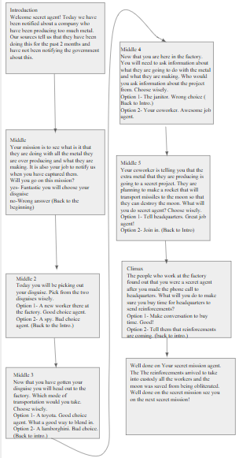
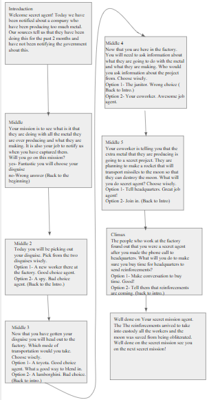

Welcome to my porfolio page. This is where all my projects will be upload to. It'll consist a photo of the project that I have been working on and completed with a short description about the project.
This is my first scratch program that I did. It is a penguin that if you press down on the space bar it will enlarge the penguin and if you move the mouse it will move the penguin as well. To see how the project works you can click on the image and it will take you to the scratch project.

My second scratch project is about a dinosaur that glides across the screen and it makes a roaring effect. This scratch project was inspired by my little brother who likes dinosaurs. To see how the project works you can click on the image and it will take you to the scratch project.
My third scratch project is a project that I worked with my partner Viviana Ortega. Our goal was to create a game or story and so we made a story about two ballerinas that performing their first performence. To see how the project works you can click on the image and it will take you to the scratch project.
My First hour of code I worked on a program called Python with Tracy the turtle. Here you are tasked to create several codes that would help Tracy the turlte create shapes. After learning how to create shapes by coding you also learned how add color to the shape by changing the code and adding certain color words like red, blue, or orange before or after that way Tracy the turtle knows that the shape should be a certain color. Alos learned that certain commands help Tracy navigate for example foward(100), left(90), or right(90). If you would like to give this program a try you could simply click on the image and it will take you to the site.
My First hour of code I worked on a program called Create Virtual Worlds with CodeHS. This program was about learmimg what an A-Frame was which is a web framework for building VR experiences and it is also based on HTML. A-Frame uses the base of HTML to help it make 3D elements in the VR world. By using a WASD command you can move foward, left, right, and bakward. By changing the attributes you can change the shape os something. To do this you would need to change the code by modifyimg the number to change the position and the coordinates. If you would like to visit the program and try it out yourself you can click the image and it will take you to the website.

This is a project in which we had to create a interactive story. Then we had to create a code for it. My story is about a spy that goes on a mission. The mission is to go to a factory and figure out why they are producing to much of a certain material. Here you can see the could that I made for the story. If you click the first picture it will take you to the website in which the code was created in.
 This is the second part of my code.

This is my outline for the story that I created. I planned out how the story was gonna play out
and I also wrote out the options of what would happen if you choose a certain option
This is the second part of my code.

This is my outline for the story that I created. I planned out how the story was gonna play out
and I also wrote out the options of what would happen if you choose a certain option